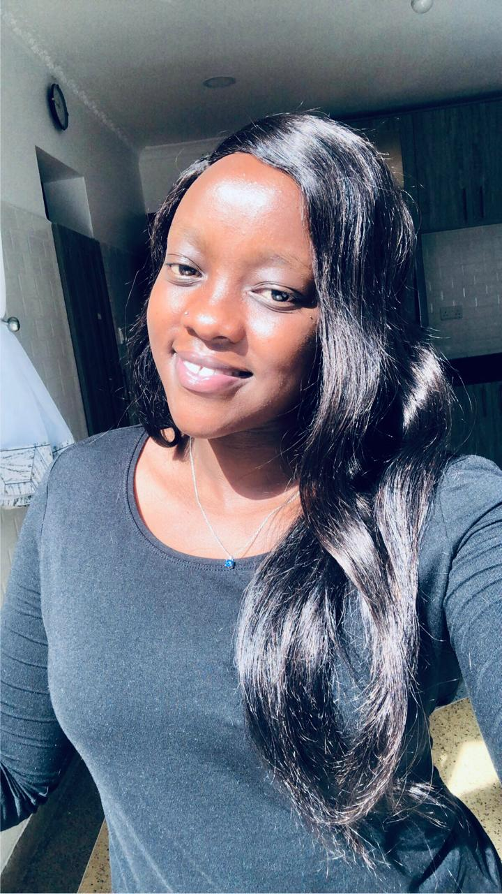

Shanice Image
About Me
Hi there! My name is Shanice Chebet Kenduiwa. I'm passionate about business and technology enthusiast with a keen interest in software engineering. I love exploring new technologies and learning new things. When I'm not coding or designing, you can find me swimming, reading a good self help book, experimenting with new recipes in the kitchen with my mum or recommending movies to my close friends. I'm excited to share my journey and projects with you through this portfolio!
Hobbies
My hobbies include;
- Swimming
- Dancing
- Watching Romcoms
- Eating Out
- Singing

spirit-animal
Why the Horse?
The Horse symbolizes passion and is often associated with travel and adventure. It's an energetic spirit animal that brings power and strong emotions, just like Leo. The spirit of the Horse can sometimes help you control your feelings and desires.